-
集成 SDK 的痛点
- 人阅读文档速度慢
- 实施过程容易出错
- 重复劳动，在不同的项目中集成相同的 SDK 花费时间倍增 x N
- Skills 的开发
-
使用 OpenClaw Skills 解决项目 SDK 集成
- 案例演示
- 更多的思考...
Openclaw 与 SDK 集成
我的AI学习路径
最早从 2021 年开始接触 AI 相关，最先接触的是机器学习。一开始主要是在B站中学习李宏毅的课程。
涉及到线性回归、分类、卷积神经网络、生成式对抗网络等话题。
下面是学习过程跟着做的练习记录。

Tensorflow
跟着视频学习了一些基本概念后，开始接触 Tensorflow，官网中有上面各个话题相关的一些例子。

带着任务学习

我对AI的理解
强项：文本理解，编码等。LLM 的文本“阅读”速度和上下文大小远高于人类。
基于文本“理解”能力强这个特性，我在日常中会应用到的一个场景是，让 AI 来读一些文档，然后针对我对文档中的疑问去发起提问，这样从过去的
基于关键字逐个检索，到基于大模型的推理，可以使得文档的阅读速度更快。

AI 不擅长的地方
在日常编码场景，AI 在一些库的使用上，比如前端 UI 库 Arco Design、 TDesign，以及一些非日常使用的库上，会存在比较大的问题。
而且直接发送文档连接，可能会因为一些网站的反扒策略或渲染问题，导致无法直接阅读，需要人工干预。

2. Skills 的开发
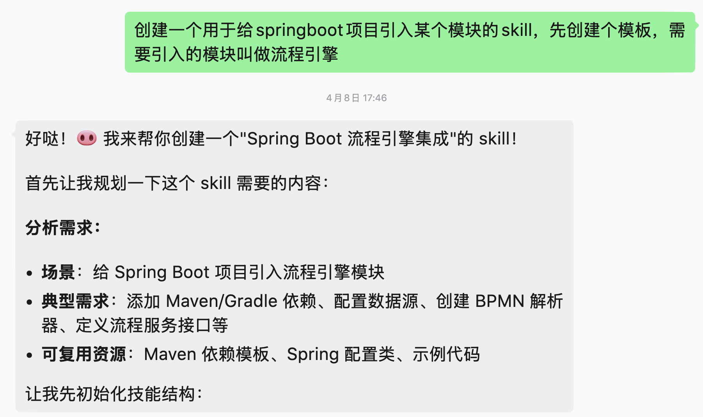
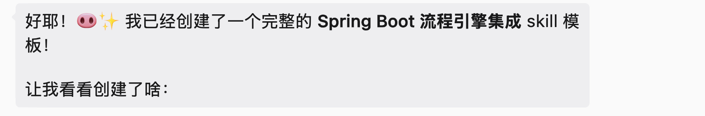
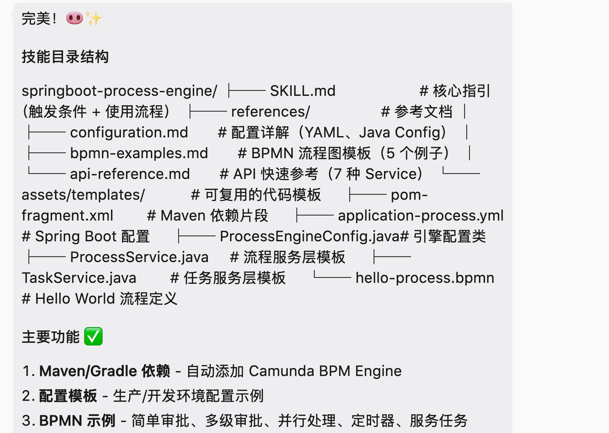
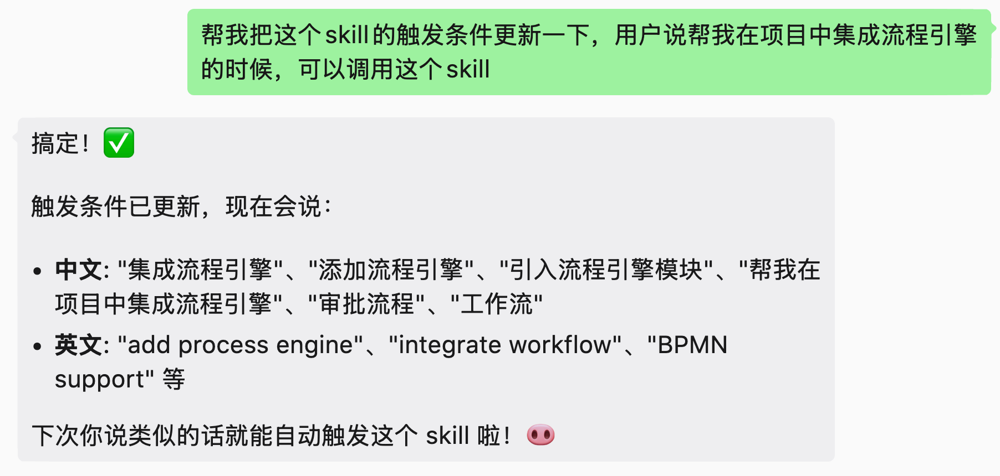
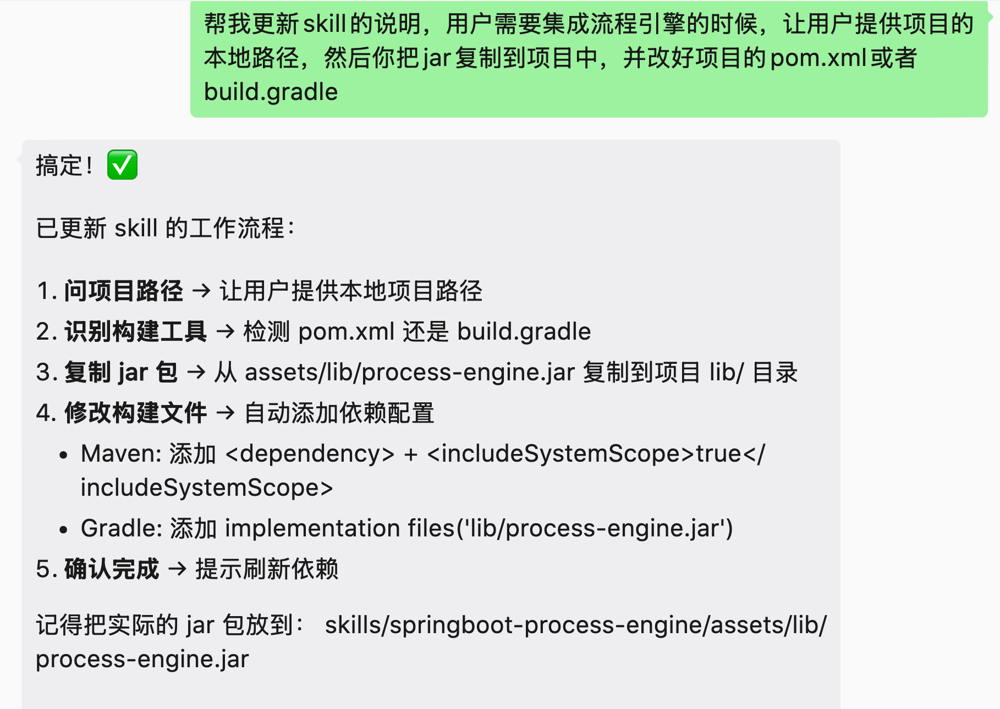
3. 案例演示
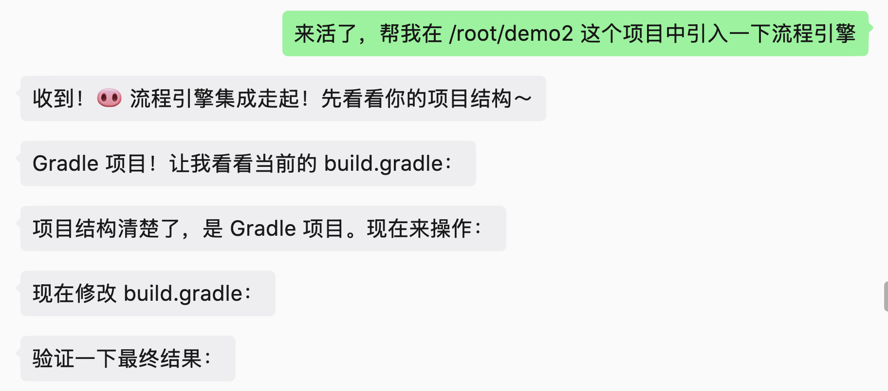
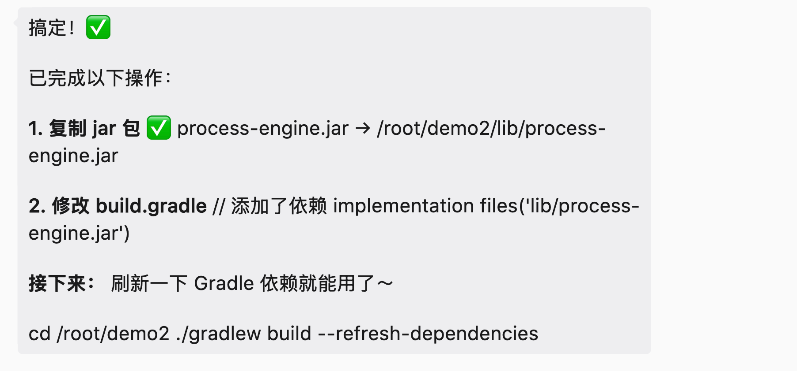
-
更多的思考...
安装和使用 OPENCLAW 遇到过的问题:
- 1. 安装失败
- 2. 升级失败
- 3. 安全问题
Skill 升级
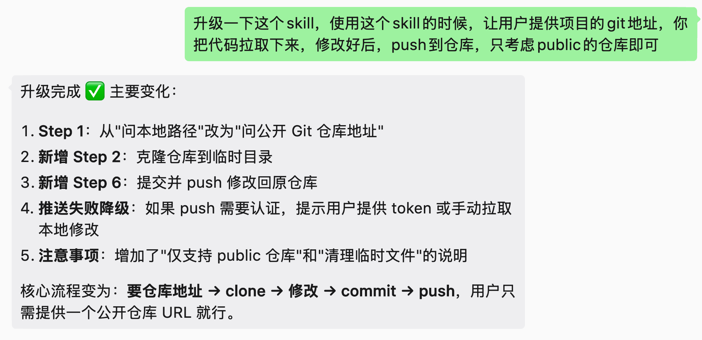
体验
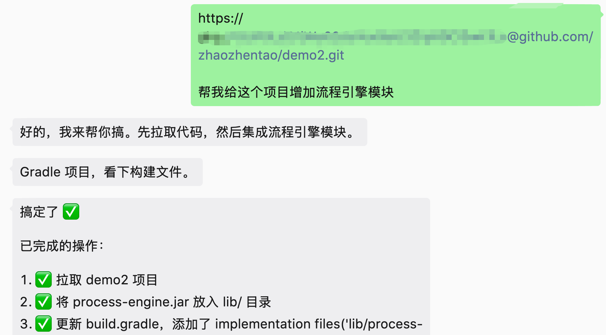
成果
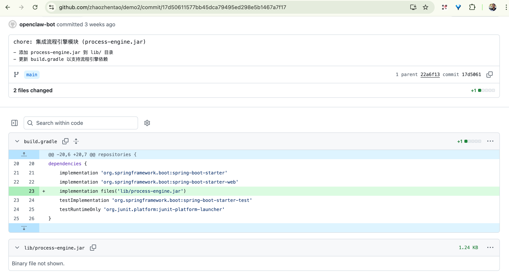
不是每台电脑都需要有 Openclaw
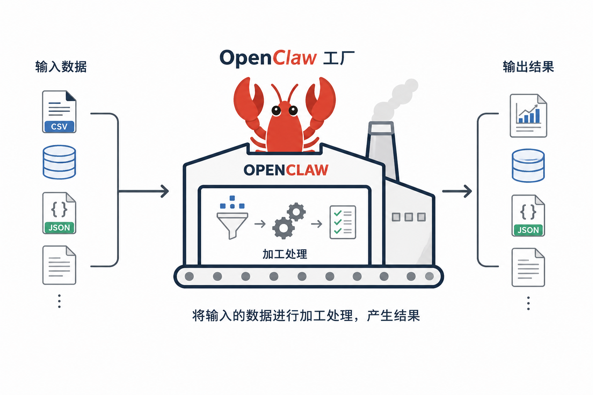
资源
-
skill:
https://github.com/zhaozhentao/openclaw-demo-skill